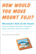

techInterview
Answers to technical interview questions - accepting donations for dogs
faq
reading
feedback
discuss
archive
fogcreek
bug tracking
pets in ny
petfinder

*new* techInterview bible
thank your brain
save a dog's life
|
Solved by
michael
five webloggers - joshua Allen, meg Hourihan, jason Kottke, robert Scoble, and joel Spolsky - were competing for karma points on the major search engines: google, yahoo, altavista, lycos, and msn. karma was distributed on a five point scale. the most popular weblog received 5 points, and the least popular received 1 point. for each search engine, no two webloggers received the same number of points. overall scores were determined by adding up the individual scores from each search engine. Allen got the highest number of karma points - 24. Kottke was consistent in his scores: he got the same karma points from 4 different search engines. Spolsky got 5 points from lycos, and 3 from msn. no two webloggers got the same total score, and the final rankings were as follows: Allen, Hourihan, Kottke, Scoble, and Spolsky. how many karma points did Hourihan get from lycos? solution: let's start with what we know G Y A L M Total |============================ A | 24 H | K | Sc| Sp| 5 3 the only possible values for Allen achieving 24 is { 5 5 5 5 4 } and since Spolsky got a 5 from lycos, we know that is where Allen's 4 comes from. we also know that the total number of points given out was 75. spolsky had to have at least 11 points. if Spolsky had more than 11 points, say 12, then is it possible to achieve a solution? Scoble would have had to have at least 13 (since there were no ties), and Kottke 14, and Houlihan 15. that would yield an overall total of 78. too much! so Spolsky definitely had 11 points. G Y A L M Total |============================ A | 5 5 5 4 5 24 H | K | Sc| Sp| 1 1 1 5 3 11 using the same logic as before, we also know that Scoble could not have gotten more than 12 points. if he had 13, and Kottke 14, and Houlihan 15, the total would be 77. still too much. so Scoble had 12, and continuing on Kottke had to have 13 and Houlihan 15, otherwise the totals would be over 75. now we know Kottke had 14 points. if he got four 4's for consistency, it wouldn't work (already over 16). if he got four 2's, it also wouldn't work (8 points plus the maximum 5 is still only 13). so he had to have received four 3's. and since he couldn't have gotten a 3 from msn, that is where he received a 1. G Y A L M Total |============================ A | 5 5 5 4 5 24 H | 15 K | 3 3 3 3 1 13 Sc| 12 Sp| 1 1 1 5 3 11 let's look at scoble. we can see from the chart that all 5's and 3's have already been given out (and there is only one 1 left). so Scoble's scores can only contain 4's, 2's, or a single 1. given that information the only possible combination of 5 scores that would yield 12 is { 2 2 2 2 4 }. since Allen already has a 4 from lycos, Scoble must have a 2 there. G Y A L M Total |============================ A | 5 5 5 4 5 24 H | 15 K | 3 3 3 3 1 13 Sc| 2 12 Sp| 1 1 1 5 3 11 hence Houlihan must have a 1 from lycos! G Y A L M Total |============================ A | 5 5 5 4 5 24 H | 1 15 K | 3 3 3 3 1 13 Sc| 2 12 Sp| 1 1 1 5 3 11 |